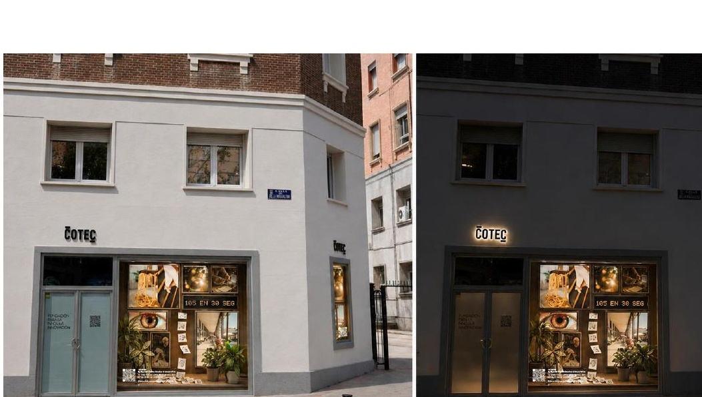
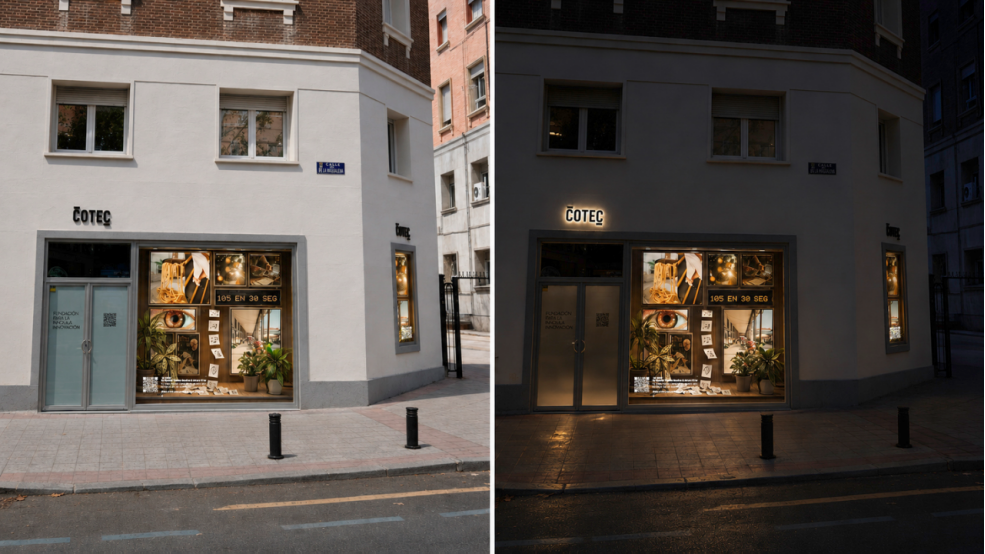

El escaparate del 0,01%
La tecnología cambia. Las personas siguen dejando huella.
¿Qué queda de nosotros cuando una máquina puede hacerlo casi todo?
IA YAYA nace de una pregunta humana. Ese 0,01% son los afectos, la intuición, el sentido común, los recuerdos y los saberes que aprendimos de otras personas. Y lo más humano no es estático: cada nueva vivencia añade una capa irrepetible a lo que somos.
“No queremos que la IA hable por nosotros; queremos que nos ayude a guardar aquello que ninguna base de datos sabe explicar.”
IA + YAYA
Tomamos la tecnología más compleja y la deformamos mediante la empatía de un niño: la hacemos cercana, tierna y accesible. La IA no es la protagonista. Es la herramienta que ayuda a conservar lo humano.
Lo inolvidable deja huella
El “nudo de la abuela” representa aquello que nos enseñaron y que permanece en nosotros. Cada nueva participación suma una vivencia distinta: una biblioteca viva, única en el tiempo, que convierte memoria compartida en nuevas oportunidades para quienes dan el paso y participan.
Una máquina imprime lo que una persona no quiere perder.
Escanea
El QR abre una interfaz web móvil optimizada.
Escribe
Dos campos obligatorios: Idea, máximo 280 caracteres, e Impacto Social. Un tercer campo opcional: “Si eres ganador/a, ¿cómo podemos contactarte?”. Sin registros obligatorios.
Imprime
Una impresora térmica convierte la aportación en una huella física, en tiempo real, detrás del cristal.
Se guarda
Cada aportación alimenta la Biblioteca de Recuerdos y las montañas de microtiques del ecosistema IA YAYA.
Experiencia diseñada para cargar en menos de 1 segundo. En esta web, el formulario es una demostración: no envía ni almacena datos.
Una biblioteca que crece con la calle.
Biblioteca de Recuerdos
Una colección viva de ideas, recuerdos y saberes cotidianos aportados por personas.
Microtiques
Pequeñas huellas impresas que convierten la participación en materia visible y acumulable.
El Archivero IA YAYA
Un empleo del futuro que todavía no existe: custodiará, filtrará y clasificará los saberes colectivos impresos en los tiques, evitando que queden atrapados tras las pantallas.

Papel + madera + impresión térmica + Cobre YAYA
El papel guarda la memoria. La impresión térmica deja la huella. La madera acerca la pieza a lo cotidiano. La arcilla y las plantas hablan de cuidado y crecimiento. En la pantalla aparece el cobre. En el papel queda la huella.
El lenguaje de los materiales
Papelmemoria / huella / permanencia
Pantallatecnología / proceso / presente
Maderacercanía / cotidiano
Arcilla + plantascuidado / crecimiento
Cobreidentidad de IA YAYA
La pantalla muestra. El papel conserva.
0,01% humano
La tecnología sostiene la infraestructura. El contenido, el sentido y la memoria pertenecen a las personas.
685 co-creadores diarios pueden convertir una calle en una conversación.
Co-creadores / día
La participación cotidiana se convierte en una forma de inteligencia colectiva: diversa, espontánea y humana. El QR no busca espectadores: busca a las personas que dan el paso y dejan algo suyo.
Ganadores semanales · 2 años
Con Sello de Innovador IA YAYA, mentoría, co-creación, vídeos de un minuto y Gala Cotec. 24 serán ganadores mensuales y 2, anuales.
Cada huella puede abrir una oportunidad: participar, ser reconocido, aprender, co-crear y ayudar a imaginar nuevos empleos alrededor de un conocimiento que antes permanecía invisible.
KNOWCASE es el comienzo, no el final.
IA YAYA está concebida como una instalación 100% desmontable y reutilizable. Tras su recorrido en KNOWCASE puede viajar a otros contextos y comunidades.
Encuentros Cotec Europa
La pieza puede activar nuevas comunidades en encuentros y espacios de innovación europeos, recogiendo otras memorias, ideas y formas de entender el futuro.
Una biblioteca que viaja
Cada destino puede aportar nuevas páginas a la Biblioteca de Recuerdos. La instalación cambia de lugar; la huella humana crece.
“Porque la tecnología cambia; las personas siguen dejando huella.”
Deja una huella.
Esta interfaz reproduce la experiencia prevista al escanear el QR de la instalación. Buscamos a quienes dan el paso: una persona, una vivencia, una nueva posibilidad.
La propuesta pide únicamente dos campos obligatorios y un contacto opcional para quienes resulten ganadores. No hay registro obligatorio. Cada aportación amplía una biblioteca que nunca es igual dos veces.